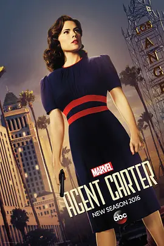

8.4
特工卡特 第二季
Agent Carter Season 2
2016
美国
评分 8.4
导演:
劳伦斯·特里林
演员:
海莉·阿特维尔 / 詹姆斯·达西 / 安维尔·乔卡亚 / 查德·迈克尔·墨瑞 / 洛特·弗贝克
类型:
冒险,动作,科幻
剧情简介
故事来到阳光炽烈的洛杉矶，佩姬·卡特抵达这座光鲜城市时，空气里混合着电影工业的喧嚣与不易察觉的暗流。表面上，她只是从东岸调来的特工，被安排处理看似普通的案件；但在一次例行调查中，一桩牵涉神秘能量的事件迅速打破了她在新环境中的平静。闪着危险光芒的物质在实验室中失控扩散，让她意识到这座城市背后的权力结构正在悄然变形。随着追查深入，佩姬在夜间穿过摄影棚的假场景，奔走于豪华别墅、秘密实验室和政治权势交缠的宴会之间。好莱坞的魅力在她眼中并非华丽布景，而是层层掩盖野心的外壳。女演员惠特妮·弗罗斯特表面光彩夺目，私下却沉迷科研，隐藏着不为人知的能力；科学家杰森·威尔克斯温和聪敏，却在一次意外后被卷入更深的阴影。佩姬在协助他们的同时，也在试图掌握那些难以控制的能量源真相。城市的灯光下，谁都在伪装。佩姬面对的不只是对手的威胁，还有隐藏在权势背后的交易与密谋。每一步推进都伴随着未知风险，而她凭借敏锐直觉与稳健行动，在层层算计中寻找突破口。她必须在分裂的联盟、多变的局势和不断逼近的危险之间维持平衡，保护那些无力自保的人，同时阻止一场可能改变世界的力量失控。